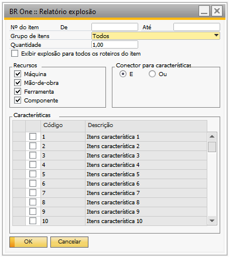
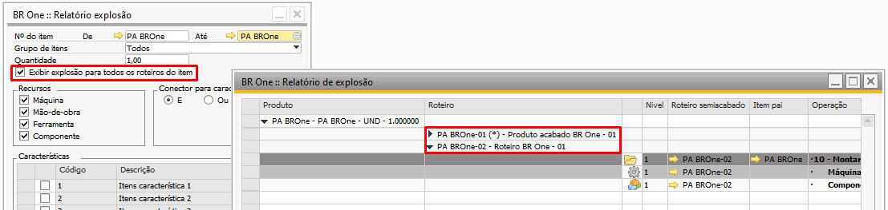
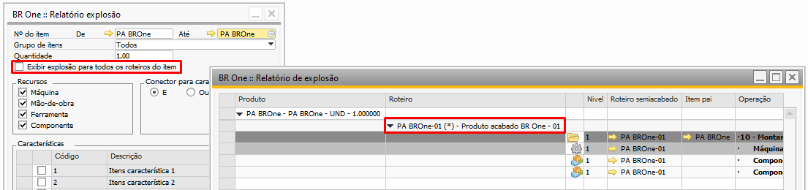
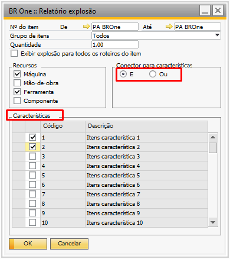
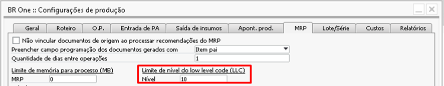

Relatório de Explosão
Para acessar o Relatório de Explosão é necessário ir no menu:
Produção -> Relatórios de produção -> Relatório de Explosão
Com o relatório de explosão você consegue ter uma visão mais detalhada das estruturas de seus itens.
Filtrando por um único item ou vários no mesmo relatório, podendo também filtrar por grupo de itens, selecionando a quantidade a ser calculada no relatório.
{kind=link}
Parâmetro Exibir explosão para todos os roteiros do item, o relatório passa a considerar todos os roteiros cadastros para o(s) Item(s) selecionados.
{kind=link}
Mantendo-o desmarcado, apenas é considerado o roteiro Padrão do componente
{kind=link}
O filtro Recursos, permiti selecionar qual o tipo de recurso ou componente que você deseja visualizar no relatório.
Máquina
Mão-de-obra
Ferramenta
Componente
{kind=link}
Conector para características, permitir usar as Características do cadastro do componente.
{kind=link}
Se houver recursividade nos roteiros ao aplicar o filtro na tela, a apresentação dos resultados levará em conta o limite de níveis do LLC.
Aviso
O banco de dados HANA possui um limite de 63 níveis para chamadas recursivas, enquanto o SQL suporta até 31 níveis. Caso esse limite seja excedido, o seguinte erro será exibido:
{kind=link}